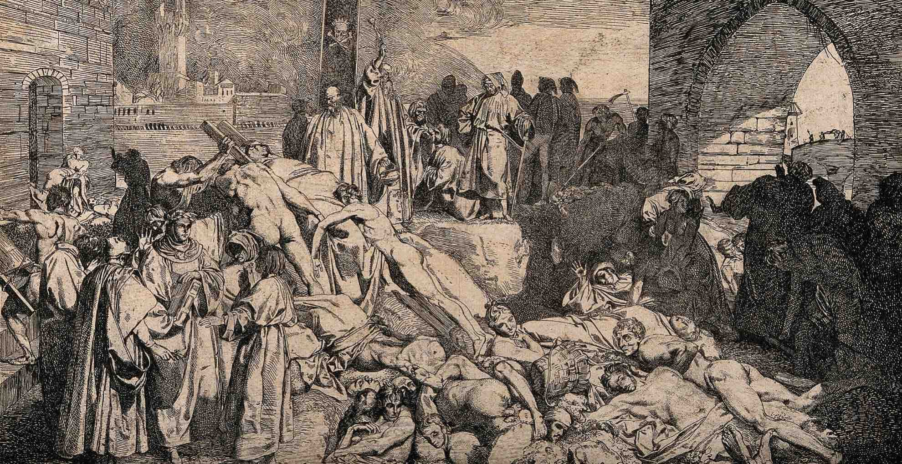

Even before the “death ships” pulled into port at Messina, many Europeans had heard rumors about a “Great Pestilence” that was carving a deadly path across the trade routes of the Near and Far East. Indeed, in the early 1340s, the disease had struck China, India, Persia, Syria and Egypt.
The plague is thought to have originated in Asia over 2,000 years ago and was likely spread by trading ships, though recent research has indicated the pathogen responsible for the Black Death may have existed in Europe as early as 3000 B.C.
Europeans were scarcely equipped for the horrible reality of the Black Death. “In men and women alike,” the Italian poet Giovanni Boccaccio wrote, “at the beginning of the malady, certain swellings, either on the groin or under the armpits…waxed to the bigness of a common apple, others to the size of an egg, some more and some less, and these the vulgar named plague-boils.”
Blood and pus seeped out of these strange swellings, which were followed by a host of other unpleasant symptoms—fever, chills, vomiting, diarrhea, terrible aches and pains—and then, in short order, death.
The Bubonic Plague attacks the lymphatic system, causing swelling in the lymph nodes. If untreated, the infection can spread to the blood or lungs.
The Black Death was terrifyingly, indiscriminately contagious: “the mere touching of the clothes,” wrote Boccaccio, “appeared to itself to communicate the malady to the toucher.” The disease was also terrifyingly efficient. People who were perfectly healthy when they went to bed at night could be dead by morning.
Today, scientists understand that the Black Death, now known as the plague, is spread by a bacillus called Yersinia pestis. (The French biologist Alexandre Yersin discovered this germ at the end of the 19th century.)
They know that the bacillus travels from person to person through the air, as well as through the bite of infected fleas and rats. Both of these pests could be found almost everywhere in medieval Europe, but they were particularly at home aboard ships of all kinds—which is how the deadly plague made its way through one European port city after another.
Not long after it struck Messina, the Black Death spread to the port of Marseilles in France and the port of Tunis in North Africa. Then it reached Rome and Florence, two cities at the center of an elaborate web of trade routes. By the middle of 1348, the Black Death had struck Paris, Bordeaux, Lyon and London.
Today, this grim sequence of events is terrifying but comprehensible. In the middle of the 14th century, however, there seemed to be no rational explanation for it.
No one knew exactly how the Black Death was transmitted from one patient to another, and no one knew how to prevent or treat it. According to one doctor, for example, “instantaneous death occurs when the aerial spirit escaping from the eyes of the sick man strikes the healthy person standing near and looking at the sick.”
Physicians relied on crude and unsophisticated techniques such as bloodletting and boil-lancing (practices that were dangerous as well as unsanitary) and superstitious practices such as burning aromatic herbs and bathing in rosewater or vinegar.
Meanwhile, in a panic, healthy people did all they could to avoid the sick. Doctors refused to see patients; priests refused to administer last rites; and shopkeepers closed their stores. Many people fled the cities for the countryside, but even there they could not escape the disease: It affected cows, sheep, goats, pigs and chickens as well as people.
In fact, so many sheep died that one of the consequences of the Black Death was a European wool shortage. And many people, desperate to save themselves, even abandoned their sick and dying loved ones. “Thus doing,” Boccaccio wrote, “each thought to secure immunity for himself.”
Because they did not understand the biology of the disease, many people believed that the Black Death was a kind of divine punishment—retribution for sins against God such as greed, blasphemy, heresy, fornication and worldliness.
By this logic, the only way to overcome the plague was to win God’s forgiveness. Some people believed that the way to do this was to purge their communities of heretics and other troublemakers—so, for example, many thousands of Jews were massacred in 1348 and 1349. (Thousands more fled to the sparsely populated regions of Eastern Europe, where they could be relatively safe from the rampaging mobs in the cities.)
Some people coped with the terror and uncertainty of the Black Death epidemic by lashing out at their neighbors; others coped by turning inward and fretting about the condition of their own souls.
Some upper-class men joined processions of flagellants that traveled from town to town and engaged in public displays of penance and punishment: They would beat themselves and one another with heavy leather straps studded with sharp pieces of metal while the townspeople looked on. For 33 1/2 days, the flagellants repeated this ritual three times a day. Then they would move on to the next town and begin the process over again.
Though the flagellant movement did provide some comfort to people who felt powerless in the face of inexplicable tragedy, it soon began to worry the Pope, whose authority the flagellants had begun to usurp. In the face of this papal resistance, the movement disintegrated.
The plague never really ended and it returned with a vengeance years later. But officials in the port city of Ragusa were able to slow its spread by keeping arriving sailors in isolation until it was clear they were not carrying the disease—creating social distancing that relied on isolation to slow the spread of the disease.
The sailors were initially held on their ships for 30 days (a trentino), a period that was later increased to 40 days, or a quarantine—the origin of the term “quarantine” and a practice still used today.
The Black Death epidemic had run its course by the early 1350s, but the plague reappeared every few generations for centuries. Modern sanitation and public-health practices have greatly mitigated the impact of the disease but have not eliminated it. While antibiotics are available to treat the Black Death, according to The World Health Organization, there are still 1,000 to 3,000 cases of plague every year.